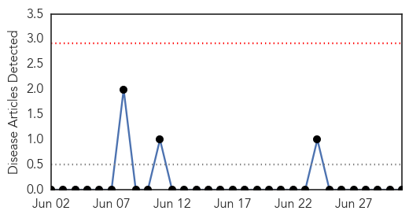

Swine Flu
30-Day Web Trend
1 alerts, 0 warnings
30-Day Twitter Trend
0 alerts, 0 warnings

Article Locations

Article Confidences

Top Articles:
- 0.995
- H1N1 strain of flu ‘will just subside’
- 0.985
- Study offers clue to link between swine flu shot, narcolepsy
- 0.983
- Swine flu jab and narcolepsy may be linked by autoimmune response
- 0.953
- Immune response to a flu protein yields new insights into narcolepsy
- 0.940
- Scientists find new evidence on GSK vaccine link to narcolepsy
- 0.800
- Europe reports West Nile virus case in Bulgaria
Top Tweets:
-
No tweets found for Jul 01, 2015
Mumps
30-Day Web Trend
0 alerts, 0 warnings

30-Day Twitter Trend
0 alerts, 0 warnings
Article Locations

Article Confidences

Top Articles:
-
No articles found for Jul 01, 2015
Top Tweets:
-
No tweets found for Jul 01, 2015